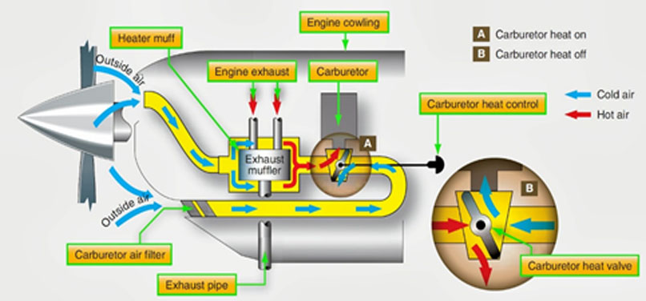

Contamination in fuel systems can mean trouble for an aircraft and engine. Damage caused by contaminated fuel can range from corrosion in the fuel cells and fuel system components, clogging of fuel filters, failure of instrumentation, or even blocking the fuel supply to the engine.
A little awareness of the causes of fuel contamination and identification can help keep it from damaging your aircraft.
The three basic types of fuel contamination are water, particulate, and microbial growth.
Selecting carburettor heat HOT is the first action, other than flying the aeroplane, to be taken in the event of any engine failure, and if carburettor icing is the cause of an engine failure it should re-establish smooth engine running.
Be aware of the ground surface when applying carburettor heat. Bypassing the filter can introduce dust and grass seeds into the carburettor, another possible cause of engine failures
Carburetor icing is caused by the temperature drop in the carburetor, as an effect of fuel vaporization, and the temperature drop associated with the pressure drop in the venturi. If the temperature drops below freezing, water vapor will freeze onto the throttle valve, and other internal surfaces of the carburetor
In light aircraft, the carburetor heat is usually manually controlled by the pilot. The diversion of warm air into the intake reduces the available power from the engine for three reasons: thermodynamic efficiency is slightly reduced, since it is a function of the difference in temperature between the incoming and exhaust gases; the quantity of air available for combustion inside the cylinders is reduced due to the lower density of the warm air; and the previously-correct ratio of fuel to air is upset by the lower-density air, so some of the fuel will not be burned and will exit as unburned hydrocarbons.
Another possible cause of the air supply being obstructed is a blockage in the carburettor air filter. In this situation, the carburettor heat, which bypasses the air filter, will provide an alternate source of air to the carburettor. The risk of filter blockage is minimised by carefully examining the air intake during the preflight inspection.
Jet fuel's composition allows water to be easily absorbed. Water can be introduced in various ways including through humidity in the air. Water present in the fuel is either suspended or is present as a liquid. The degree of suspension is affected in part by temperature.
Whenever the temperature of the fuel decreases, some of the water particles that are suspended in the fuel are drawn out of the solution and slowly accumulate at low points in the system. Warmer temperatures promote the absorption of moisture from the atmosphere and suspension in the fuel. There is a constant cycle of absorption, suspension, and accumulation at low points.
If water is allowed to remain in fuel, it will promote the growth of microorganisms or bacteria that feed on the hydrocarbons in the fuel, thereby degrading the fuel quality. These organisms are the next topic of contamination ' microbial growth.
Certain bacteria and fungi thrive in water where it interfaces with jet fuel. These microorganisms feed off alkanes and additives in the fuel. The by-product of these organisms is a sludge-like substance that can cause corrosion on steel and aluminium surfaces and attack rubber fuel system components. It can also foul filters and system instrumentation.
Eliminating water from the fuel system is one way to control microbial growth. In addition, there are products that can be added to the fuel. These additives eliminate the growth of fungus and other microbes.
Particulate contamination can be introduced in many different ways. From dirt and sand getting in open ports to degradation of fuel system lines, particulates are constantly being introduced to fuel systems.
Engine fuel filters and screens help trap particulates before they can damage the engine. Regular inspection ensures that any excessive particulate presence is investigated to the source of the contamination. Cleaning the filters ensures that the filter elements do not become clogged. Two possibilities exist with clogged fuel filters. In filters with a bypass system, once the filter is clogged enough to cause the differential pressure to activate the spring mechanism, the fuel will no longer be filtered, but will instead bypass the filter altogether. This can cause failure of components downline. In non-bypass filters, the differential pressure that is built up could damage the filter element and possibly generate even more particulate contamination.
There are several practices that can be incorporated to help prevent fuel contamination. At the forefront of preventing contamination is covering all open lines during maintenance. All open fuel system lines should be capped or otherwise protected during maintenance operations to prevent particulates and moisture from entering the system.
Any time a fuel cell is opened up, there is a big potential for debris to be introduced into the system. Before closing a fuel cell access panel, check thoroughly for any foreign objects.
Regular fuel sampling can help reduce problems with microbial growth and freezing associated with water in the system. It can also help identify if particulate contamination is present.
Because water has a higher specific gravity than jet fuel, it tends to settle at the bottom of tanks. Sampling fuel at all the low point fuel drains helps remove any accumulated fuel.
During sampling, fuel is drained into a clear container filling it half way to two-thirds full. By holding it up to the light, any water or particulates present can be seen. Swirling the sample around to create a tornado-shaped vortex can also be helpful to spot contaminants. Any water or particulates will accumulate at the bottom of this vortex.
One way to tell if water is present in a sample is to add a few drops of food coloring to it. The food coloring mixes with any water present but does not mix with the fuel. If no water is present, the dye will just settle in the bottom of the container.
When sampling, fuel should be drawn until you have a clear, clean sample. Never take a fuel sample immediately after an aircraft is fueled. The fueling action causes the water and particulates to become temporarily suspended in the fuel. A good time to take a fuel sample is prior to the first flight of the day.
The most probable cause of engine failure is fuel contamination, something in the fuel most commonly water. Most students are surprised to learn that mechanical failure is not the most common cause.
The three basic types of fuel contamination are water, particulate, and microbial growth. Jet fuel's composition allows water to be easily absorbed. Water can be introduced in various ways including through humidity in the air.
Poor compression of both fuel and air inside a car engine is a recipe for disaster. The most common reasons for poor engine combustion is due to broken valve seals, holes within cylinders and overused piston rings, forcing air to leak out.
Signs of contaminated fuel include;
1. Engine running rough or stalling.
2. Engine harder to start than usual.
3. Misfiring, pinging or backfiring.
4. “Engine Check” light illuminated.
5. Sickly sweet smelling exhaust fumes.
Fuel starvation state in which the fuel supply to the engine is interrupted, although there is adequate fuel on board the aircraft.
Fuel starvation occurs when the fuel supply to the engine(s) is interrupted even though there may still be. useable fuel on board the aircraft. Fuel starvation incidents generally occur as a result of fuel mismanagement such as the result of a pilot selecting the incorrect, or empty, fuel tank during flight.
Symptoms of fuel starvation
Sputtering Engine
Fuel starvation occurs when the fuel supply to the engine(s) is interrupted even though there may still be. useable fuel on board the aircraft. Fuel starvation incidents generally occur as a result of fuel mismanagement such as the result of a pilot selecting the incorrect, or empty, fuel tank during flight.
Causes and Contributors
There are three major causal factors for fuel starvation occurrences:
Pilot factors
These are the most common cause for fuel-related occurrences.
Fuel Mismanagement
This occurs when the pilot forgets to switch fuel tanks when necessary, or switches to the wrong fuel tank, or just doesn’t monitor the fuel burn during a flight. Much of the time, the problem stems from a lack of understanding of the fuel system itself.
Lack of familiarity
Lack of familiarity with the aircraft, or lack of experience on the particular aircraft type.
Distractions
There have been aircraft accidents in the past in which the pilots allowed a fuel starvation event to occur while preoccupied with something else, like fixing a landing gear problem or becoming disoriented.
Fuel Exhaustion is a situation where there is no more fuel onboard. Unlike Fuel Starvation there is nothing to be done about re-establishing the flow of fuel. Most of these occurrences lead to a forced landing or a ditching.
The difference is that in the exhaustion case there is no fuel remaining on board (for whatever reason) while with starvation there is (sometimes enough) fuel but for some reason it cannot reach the engine. It is therefore possible in some cases to re-establish the flow of fuel and to regain engine power.